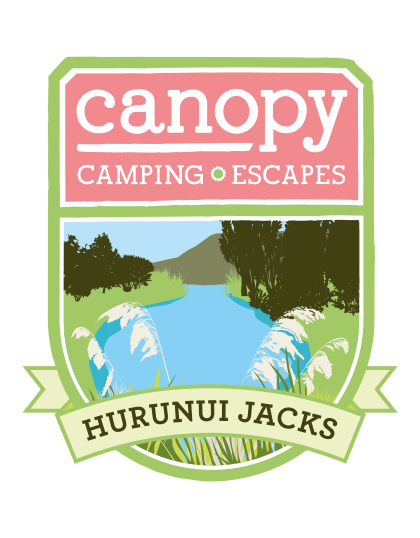

The Glamping Tent at Hurunui Jacks
The Tent at Hurunui Jacks is an unforgettable glamping experience.
Your luxury canvas tent rests on a private spot beside the Kaniere River, nestled amongst ancient virgin
forest. The campsite consists of a large and roomy canvas tent, with a wood-burning stove. A fully covered
and enclosed camp kitchen and bathroom is set just a few metres away. Enjoy a glass of wine and a soak in
an outdoor bath under the stars.
Then, tucked up in your comfortable bed, between linen sheets and
under a
goose down duvet, you'll be able to lie back and relax to the sound of the river. Lose yourself in the
West Coast wilderness. Enjoy the peace and the ethereal feeling of being surrounded by ancient bush, in a
truly unique landscape.

Book Now
The Nest at Hurunui Jacks
The Nest at Hurunui Jacks is a cosy little haven situated close,
but separate to the main house. Next to the Nest you will find your own private fire pit by the pond, the
perfect place to end your evening - marshmallows provided! The Nest has a private outdoor bath and shower,
perfect for star gazing. The Nest has a kitchen with hotplate and microwave so you can cook your own food
and a BBQ grill is available on request.
Book Now
Anyone staying at Hurunui Jacks will have the opportunity to try
coffee freshly roasted on the
property by Wendy. You're more than welcome to come and watch Wendy roast. Once you leave Hokitika
there's nowhere to buy groceries so we recommend you stock up when you're in town!
The West Coast
Wilderness Trail (part of the New Zealand wide cycle trail initiative) runs through our property. We have
two bikes and helmets that you're welcome to use if you want to explore. We also have two kayaks and life
jackets you can use to have a spin around our lake.
Feel free to explore the property, surrounded by
National Park and Dept. of Conservation land, take a walk through the native bush and down to the river,
just breathe in the peace of it all. We have a few friendly resident birds who may come and visit you in
the Nest, a duck called Daisy, a little Weka family, and some Pukeko. You're also likely to see Robins,
Bell birds, Tom tits, tui and swallows.
Contact